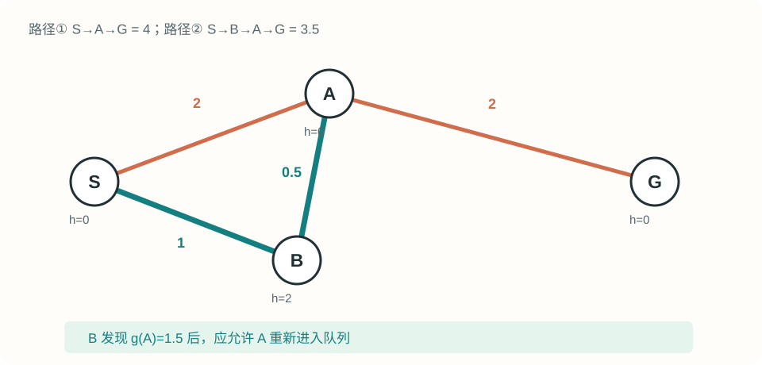

A*：如何用一个下界引导最短路搜索？
从 f=g+h 到可纳性与一致性，再到节点重开和正确终止时机：不仅知道 A* 怎么写，还知道它什么时候才是对的。
为什么知道距离终点的方向仍不足以求最短路
地图中的搜索有两个相反的极端：Dijkstra 只依赖已走成本 g(n)，对终点的位置不作特别偏好；贪心最佳优先只看估计的剩余成本 h(n)，遇到死胡同时可能浪费大量路径代价。A* 的核心不是“更神奇的寻路”，而是同时衡量已经花费的代价与到目标的保守估计。
前提必须写出来：我们有一张可查询的图、非负边权、可生成合法邻居、且 h(n) 与选定的边代价使用相同单位。若边权表示秒而 h 只返回米，两者就不能直接相加。
BEST FIRST SEARCH · 07
用 f=g+h 给未完成路径排序
每次从优先队列中取出评价函数最小的状态：g(n) 是发现的最好起点→n 成本，h(n) 是从 n 到终点的估计成本。A* 使用以下排序键：
例如 P 的 g=4、h=4，则 f=8；Q 的 g=6、h=1，则 f=7。A* 会先展开 Q，即使它已经花费更多成本。不同的 h 会改变队列顺序，但“越靠近终点越好”本身不能构成最优性证明。
BEST FIRST SEARCH · 07
怎样从移动规则设计可靠的 h
理想启发式是实际剩余最短成本 h*(n)，但如果我们已经知道 h*，就不需要搜索。于是常用方法是先忽略障碍或放松约束，求一个更容易计算的下界。例如四邻域单位移动：任何路线至少有 |Δx|+|Δy| 步；允许每步任意方向按欧氏长度付费，直线距离不可能大于实际折线路径长度。
| 运动模型 | 下界 h | 关键假设 |
|---|---|---|
| 4 连通单位代价 | |Δx|+|Δy| | 每步轴向距离 1 |
| 8 连通轴向 1、对角 √2 | max(dx,dy)+(√2−1)min(dx,dy) | 角点穿越规则一致，且单步代价如上 |
| 连续空间按距离成本 | 欧氏距离 | 移动代价不小于实际路线长度 |
如果某类地形每一步成本有下限 c_min，可以用 c_min × 网格步数下界 作为保守估计。低估太多通常意味着更多扩展，超估则可能破坏经典 A* 的最优性保证。
最优性依赖什么，不依赖什么
可纳性（admissibility）要求对所有相关状态 h(n)≤h*(n) 且目标估计为 0；一致性（consistency）要求每条边满足 h(u)≤c(u,v)+h(v)。后者相当于 h 的三角不等式，能使边被扩展时 f 不下降：
当一个尚未弹出的候选节点 f 小于当前目标成本时，仍可能存在更好的到达目标的路线。可纳 h 意味着候选 f 是一条潜在完整路线的下界；只有目标以最小有效 f 弹出并得到终止条件，才能认定结果最优（假定非负代价、图有限或算法可终止、存在可行解，以及允许必要的重新扩展）。对于一致 h 的经典图搜索，更容易证明节点首次被确认后无需重开。
注意边界：论文中的“最优效率”涉及特定比较算法、启发式条件与平局情况，不能概括为 A* 在任意地图都扩展最少节点。历史上 1968 年原论文还有 1972 年勘误说明。
一个可纳但不一致的三节点更新反例
构造有向图：S→A=2，S→B=1，B→A=0.5，A→G=2。S→A→G 的成本为 4，但最佳路线 S→B→A→G 只有 3.5。定义 h(S)=0、h(A)=0、h(B)=2、h(G)=0。这里 h(B)=2≤2.5=h*(B)，因此不高估，但对 B→A：2>0.5+0，不满足一致性。
BEST FIRST SEARCH · 07

这说明所谓 closed 的使用必须配合证明前提。更稳妥的教学实现是保存各节点目前最小的 g，当新的 g 更小时入堆，并把不等于最新 g 的过期条目跳过。对于非负图上的可纳启发式，这样的实现不会错误阻止更优路线；但可能比一致 h 情形重开更多节点。
用代码证实重开是必要的
以下实现针对非负有向边权的有限图，用 Python 3.10+ 的 heapq；为了清楚暴露“节点可重开”这一性质，故意不使用永久冻结 closed 集合。代码断言验证了不一致但可纳启发式的最优解仍为 3.5，并以 h=0 作基线。
from heapq import heappush, heappop
from math import inf
def astar(graph, start, goal, h):
"""非负带权有向图。发现更小 g 时允许节点重新入队。"""
g = {start: 0}
parent = {start: None}
queue = [(h(start), 0, start)]
expanded = 0
while queue:
f, distance, u = heappop(queue)
if distance != g.get(u, inf):
continue # 不允许旧堆项覆盖更好的前驱
expanded += 1
if u == goal: # 可纳 h(goal)=0 时的标准终止时机
path = []
while u is not None:
path.append(u)
u = parent[u]
return distance, path[::-1], expanded
for v, cost in graph.get(u, ()):
if cost < 0:
raise ValueError("nonnegative edges required")
candidate = distance + cost
if candidate < g.get(v, inf):
g[v] = candidate
parent[v] = u
heappush(queue, (candidate + h(v), candidate, v))
return inf, None, expanded
# h(B)=2 虽然低于真实剩余代价 2.5，
# 但不一致：h(B) > cost(B,A)+h(A) = 0.5。
g = {
"S": [("A", 2), ("B", 1)],
"A": [("G", 2)],
"B": [("A", 0.5), ("G", 9)],
"G": [],
}
heuristic = {"S": 0, "A": 0, "B": 2, "G": 0}
result = astar(g, "S", "G", heuristic.__getitem__)
assert result[0] == 3.5
assert result[1] == ["S", "B", "A", "G"]
baseline = astar(g, "S", "G", lambda node: 0)
assert baseline[0] == result[0]
assert astar(g, "G", "S", lambda node: 0)[1] is None
print("A* optimal:", result[:2], "h=0:", baseline[:2])工程实现还需要：先校验全图边权、定义不可达返回值、处理多个目标集合、为相等 f 设计明确的平局顺序，以及对浮点代价设置适当的容差。此小程序不是完整导航系统，也没有声称速度提升。
怎样比较搜索效率，避免虚构加速
应在同一张地图、同一套邻居生成器和边代价条件下比较 Dijkstra 与 A*。至少记录弹出的有效节点数、碰撞查询次数、峰值 OPEN 大小、找到的路线代价以及计时环境。由于队列平局顺序、障碍分布和启发式强弱不同，A* 未必在所有实例中都明显优于 h=0。
四种常见误用：① h 的单位和边权不同；② 先发现终点便停止；③ 为了“提速”随意放大 h 还声称最优；④ 对无边、负权和动态障碍不处理。路径搜索是在已定义的图上作决定；真实世界的安全性仍由状态建模与碰撞检查保证。